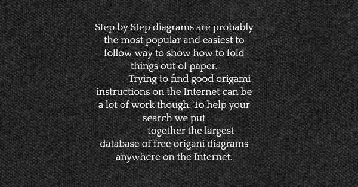
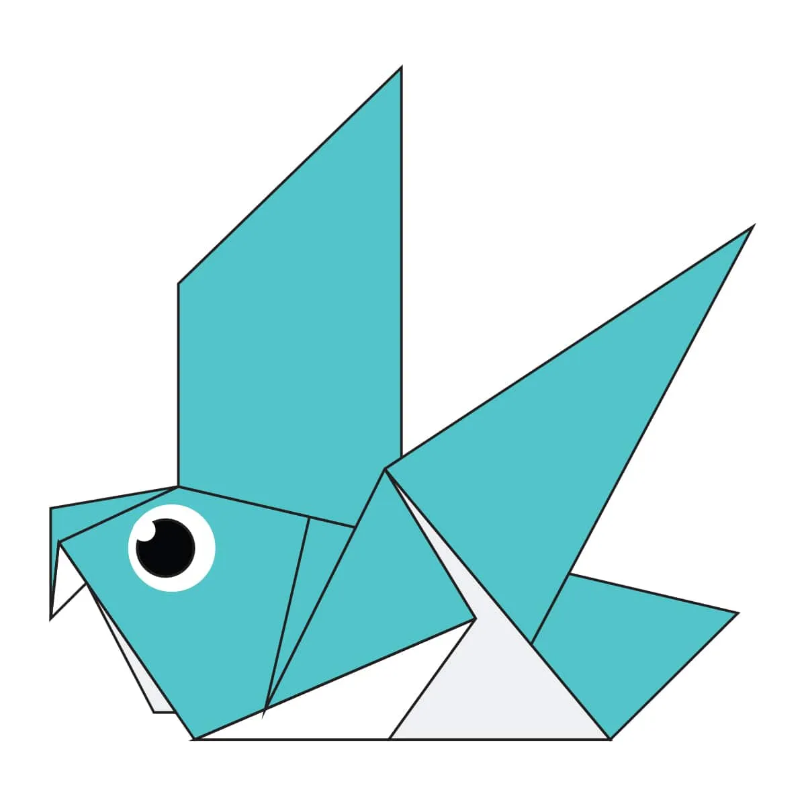

Origami Instructions and Diagrams

Chameleon
1. Chameleons mostly live in the rain forests and deserts of Africa.
2. The color of their skin helps them blend in with their habitats.
3. A chameleon's tongue is twice the length of its body.

Cicada
1. Cicadas live a really long time.
2. Cicadas Live on All Continents Except Antarctica
3. They Have One of the Longest Insect Life Spans

panda
1. They spend a lot of their day eating.
2. The typical panda grows from 1.2 m to 1.9 m
3. Bamboo is critical to their diet.

pigeon
1. Pigeons are highly sociable animals.
2. Pigeons are Very Fast.
3. Pigeons are our most common urban bird.

teddy
1. teddy bear is a stuffed toy in the form of a bear.
2. The first toy stuffed bear was created by German toymaker Margarete Steiff.
3. They are usually small and soft